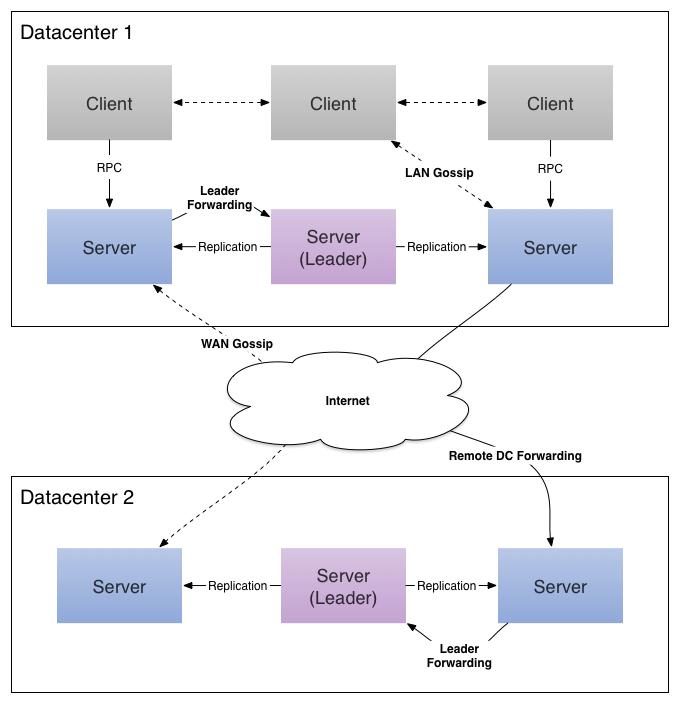

Consul 是什么 Consul 是一个支持多数据中心分布式高可用的服务发现和配置共享的服务软件，由 HashiCorp 公司用 Go 语言开发，基于 Mozilla Public License 2.0 的协议进行开源。Consul 支持健康检查,并允许 HTTP 和 DNS 协议调用 API 存储键值对。 命令行超级好用的虚拟机管理软件 vgrant 也是 HashiCorp 公司开发的产品。 一致性协议采用 Raft 算法，用来保证服务的高可用。使用 GOSSIP 协议管理成员和广播消息，并且支持 ACL 访问控制。
功能特点
Consul 的优势
Consul 的角色
Agent 代理是长时间运行的守护进程在每个Consul集群的成员。它是由Consul代理运行。代理能够在客户机或服务器上运行模式。由于所有节点都必须运行一个代理,它是简单的参考节点作为一个客户端或服务器,但还有其他代理的实例。所有代理可以运行DNS或HTTP接口,并负责运行检查和保持服务同步。
Client 客户端是转发所有的RPC到服务器的代理。客户端是相对无状态的。客户端执行的唯一背景活动是正在LAN八卦池(gossip pool)的一部分。这具有最小资源开销，仅消耗少量的网络带宽。
